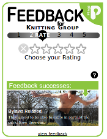

Widgets Overview
FastFeedback
Fastfeedback is a box-style widget designed to be included in a page which holds details about a pling.
The widget is suited to inclusion in sidebars or column layout pages. The widget requires a minimum space of 280px by 265px.
Fastfeedback is designed to suport multiple uses on the same page to gather feedback about different plings. The widget prominently displays the title of the relevant pling.
Fastfeedback can be presented in a variety of colour themes (currently green and orange).
The widget uses a sequence of slides to ask its users to provide any/all of the following:
Whether or not they attended the activity
A rating for the activity (on a 5 star scale)
A comment about the activity
- A ‘signature’ for their feedback, which might be:
- A mobile phone number
- An email address
- A Facebook account
- Anonymous
Users can supply any of the above data, which is saved in sections, at the end of each individual interaction.
Fastfeedback also displays a slideshow of inspirational stories intended to highlight the effectiveness of giving feedback.
TopBar
TopBar is a bar-style widget designed to be displayed across the top of a page which contains details of a pling. The occupies a space 65px high and the full width of the browser window.

TopBar presents a single interface which asks its users to provide any/all of the following.
Whether or not they attended the activity
A rating for the activity (on a 5 star scale)
A comment about the activity
- A ‘signature’ for their feedback, which might be:
- A mobile phone number
- An email address
- A Facebook account
- Anonymous
As soon as any valid data has been entered the widget exposes its ‘send’ button.
Plingback Button
An alternative presentation of FastFeedback, Plingback Button assists in deploying buttons which activate Fastfeedback in a modal site overlay. See Modal Presentations For Widgets
Groupback
A version of the Fastfeedback widget has been used in an app designed to help gather feedback at an activity by passing a mobile device around participants. See Groupback - collecting feedback on the spot
Greasemonkey Demo
If you’d like to see the widgets in action (or need a starting point for developing a script which will let you see the widgets on your own site for testing purposes) there are three Greasemonkey user scripts available which insert the widgets into activity pages on http://plings.net. Use the following steps to enable the scripts in your copy of Firefox:
- Get Firefox if you haven’t already...
- Install the Greasemonkey extension
- Load the user script to enable the Fastfeedback widget http://plingback.appspot.com/widgets/testing/fastfeedback.user.js
- Load the user script to enable the Topbar widget http://plingback.appspot.com/widgets/testing/plingback.user.js
- Load the user script to enable the Plingback Button widget http://plingback.appspot.com/widgets/testing/plingback_button.user.js
- Visit a plings activity page such as http://plings.net/a/575002
- Disable a couple of the scripts when it all gets a bit overwhelming